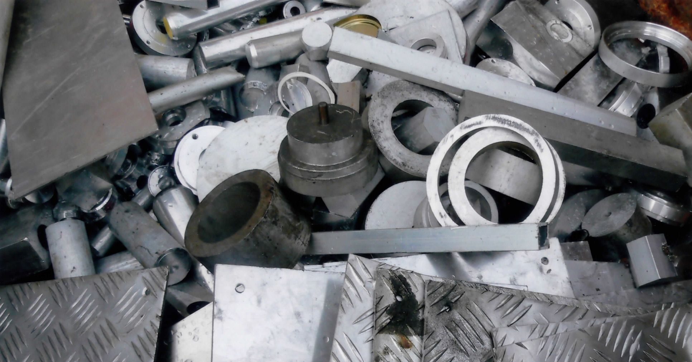
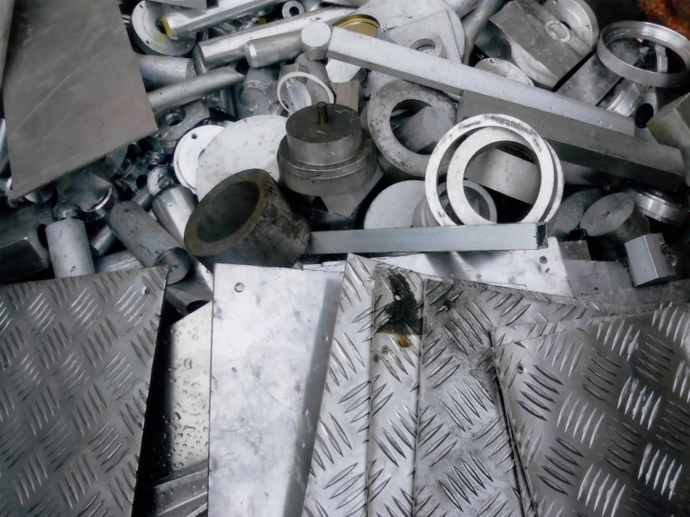
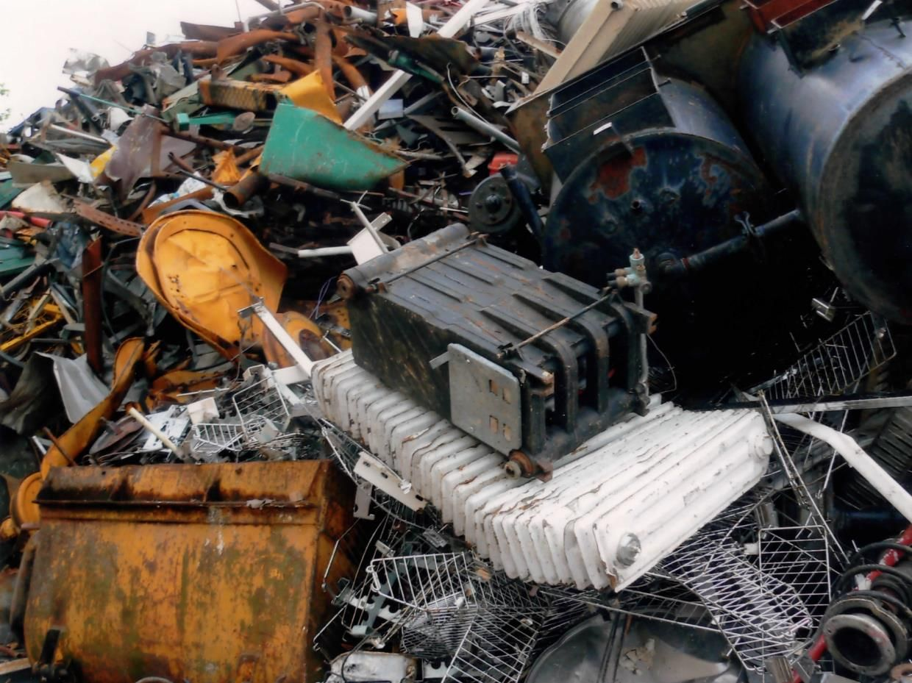
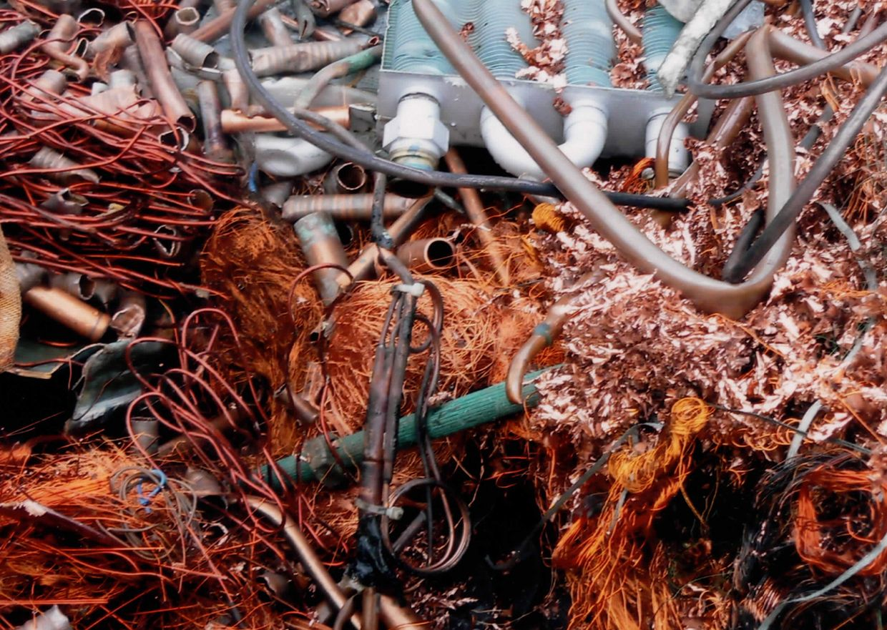
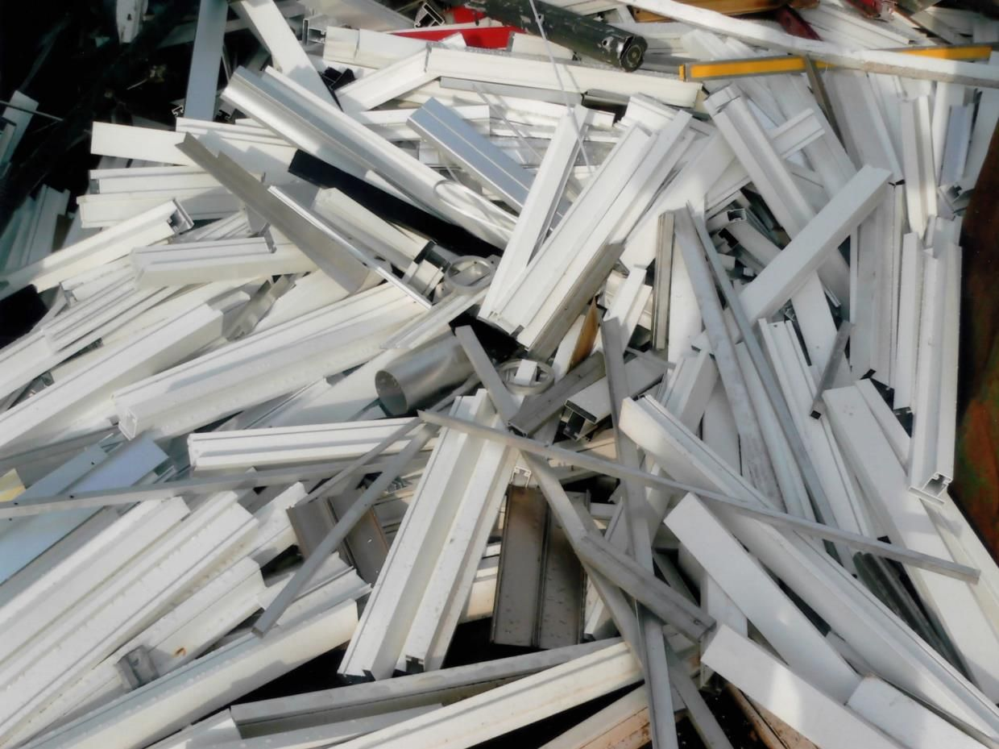
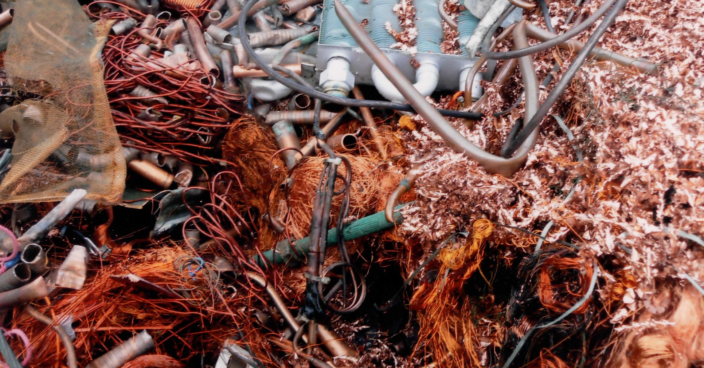
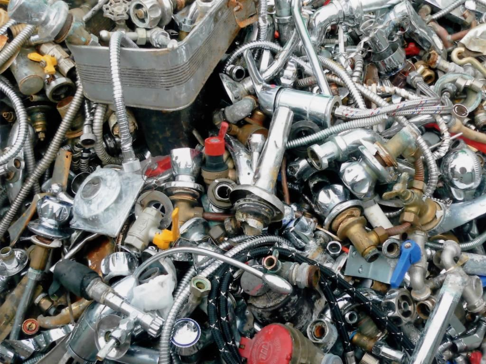
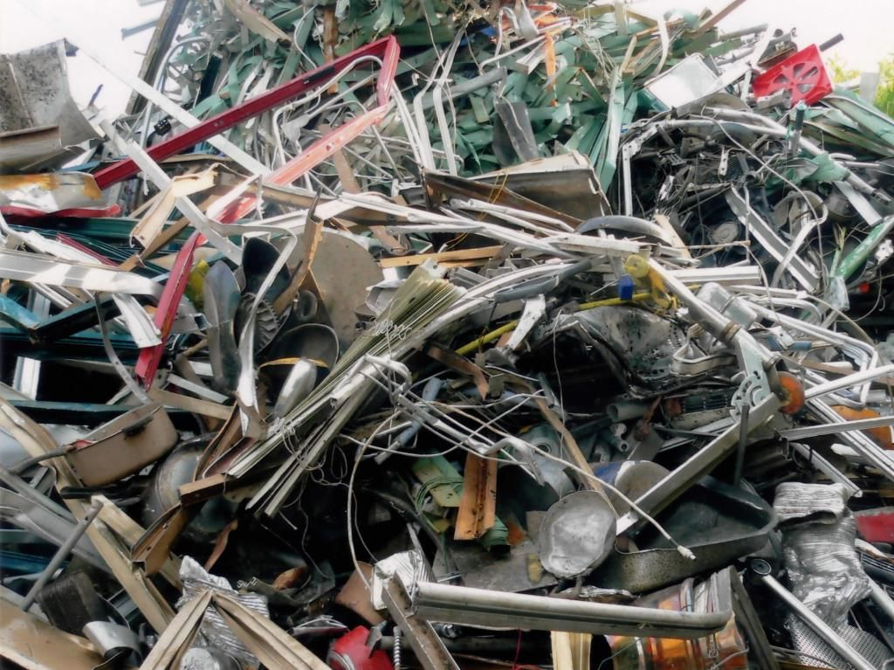
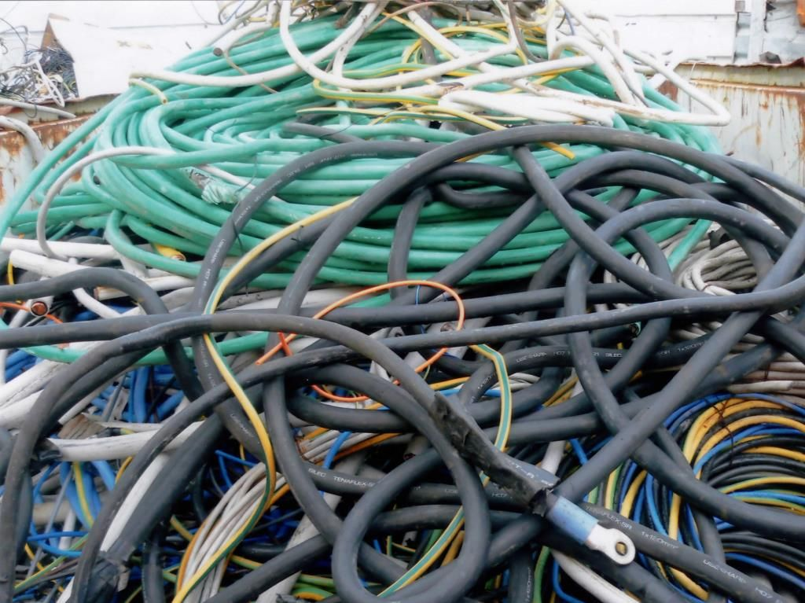
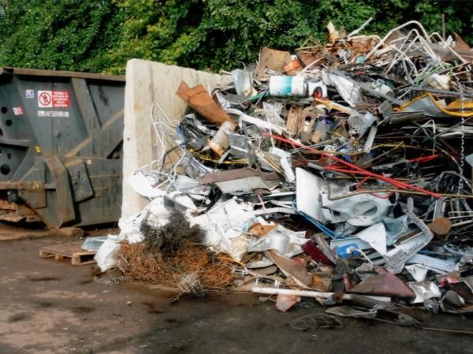

Azzano Decimo Pordenone
Quello chescartate tornamateria.
Raccolta e commercio rottami metallici Pordenone
01 — L'azienda
Una realtà del territorio.
Minudel Rottami lavora da Azzano Decimo. Servizi per enti, aziende e privati: raccolta rottami metallici, cernita e avvio a riciclo, commercio all'ingrosso rottami.
02 — I mezzi
Mezzi propri, personale formato.
Mezzi per trasporto e stoccaggio in sede (numero non indicato). Ogni intervento parte dalla nostra sede con attrezzature nostre: niente subappalti da coordinare, un solo referente.
03 — Il metodo
Dalla chiamata al documento.
Conferimento: il materiale arriva in impianto e viene pesato. Controllo: verifica di codici, documenti e qualità del carico. Selezione: separazione per tipologia di materiale.
Servizi
Cosa facciamo, uno per uno.
Aprite il servizio che vi interessa: descrizione e foto dal campo.
Ritiro e recupero di metalli ferrosi e non ferrosi.
Selezione dei materiali e avvio a recupero, perché tornino risorse.
Ritiro e recupero di metalli ferrosi e non ferrosi.
Ricezione, selezione e avvio a recupero dei materiali, perché tornino a essere risorse.
Ricezione, selezione e avvio a recupero dei materiali, perché tornino a essere risorse.
Ricezione, selezione e avvio a recupero dei materiali, perché tornino a essere risorse.
Ritiro e recupero di metalli ferrosi e non ferrosi.
Dove siamo
Da Azzano Decimo, a portata di mezzo.
Distanze dalla sede ai capoluoghi vicini, per capire in quanto tempo un mezzo può essere sul posto.
Lavora con noi
Autisti, operatori, tecnici: cerchiamo persone che conoscono il territorio.
Mandateci il vostro curriculum: lo leggiamo tutto, e vi richiamiamo.
Contatti
Scriveteci, vi richiamiamo.
Enti, aziende e privati: indicateci il servizio e la zona, vi rispondiamo con tempi e preventivo.